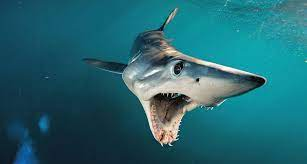

Introducción
Los tiburones son antiguos y fascinantes depredadores marinos. Con más de 500 especies, estos peces cartilaginosos han dominado los océanos durante millones de años.
cuerpo hidrodinámico, sentidos agudos y dientes afilados los convierten en cazadores eficientes.
pesar de su temida reputación, los tiburones son una parte esencial de los ecosistemas marinos y enfrentan diversas amenazas como la sobrepesca.
Especies de tiburones
1. Tiburón Blanco (Carcharodon carcharias)
Tamaño: Uno de los más grandes, puede alcanzar los 6 metros.
Hábitat: Aguas templadas y frías de todos los océanos.
Alimentación: Grandes mamíferos marinos como focas y leones marinos.
Características: Cuerpo robusto, aleta dorsal triangular y una dentadura formidable.
2. Tiburón Tigre (Galeocerdo cuvier)
Tamaño: De tamaño mediano a grande, puede llegar a los 5 metros.
Hábitat: Aguas tropicales y subtropicales de todos los océanos.
Alimentación: Muy variada, desde peces y tortugas hasta aves y placas de matrícula.
Características: Líneas verticales oscuras en el dorso que le dan su nombre.
3. Tiburón Martillo (Sphyrna mokarran)
Tamaño: De tamaño mediano, con una cabeza distintiva en forma de martillo.
Hábitat: Aguas costeras tropicales y subtropicales.
Alimentación: Peces óseos y crustáceos.
Características: Excelente visión y detección de campos eléctricos.
4. Tiburón Ballena (Rhincodon typus)
Tamaño: El pez más grande del mundo, puede superar los 12 metros.
Hábitat: Aguas cálidas de todos los océanos.
Alimentación: Plancton, krill y pequeños peces, que filtra del agua.
Características: Boca enorme y piel con manchas blancas.
5. Tiburón Mako (Isurus oxyrinchus)
Tamaño: De tamaño mediano a grande, con un cuerpo esbelto y una aleta caudal grande.
Hábitat: Aguas templadas y tropicales de todos los océanos.
Alimentación: Peces pelágicos como atún y marlín.
Características: Uno de los tiburones más rápidos, puede alcanzar velocidades de hasta 70 km/h.
6. Tiburón Toro (Carcharias taurus)

Tamaño: De tamaño mediano, con un cuerpo robusto y una cabeza ancha.
Hábitat: Aguas costeras tropicales y subtropicales, incluyendo ríos y estuarios.
Alimentación: Peces óseos, rayas y crustáceos.
Características: Tolerancia a una amplia gama de salinidades.
7. Tiburón Angelote (Squatina squatina)
Tamaño: De tamaño mediano, con un cuerpo aplanado y aletas pectorales grandes.
Hábitat: Fondos marinos costeros de aguas templadas y frías.
Alimentación: Peces óseos y crustáceos.
Características: Se camufla en el fondo marino.
8. Tiburón Linterna (Etmopterus spp.)
Tamaño: Pequeño, con órganos luminosos en su cuerpo.
Hábitat: Aguas profundas de todos los océanos.
Alimentación: Peces pequeños y crustáceos.
Características: Bioluminiscente, produce luz para atraer presas.
9. Tiburón Martillo Gigante (Sphyrna tudes)
Tamaño: Grande, con una cabeza en forma de martillo muy ancha.
Hábitat: Aguas tropicales y subtropicales del Pacífico y el Atlántico.
Alimentación: Peces óseos y rayas.
Características: Una de las especies de tiburón martillo más grandes.
10. Tiburón Goblin (Mitsukurina owstoni)
Tamaño: De tamaño mediano, con un hocico largo y extensible.
Hábitat: Aguas profundas de todos los océanos.
Alimentación: Peces óseos y cefalópodos.
Características: Aspecto prehistórico, considerado un "fósil viviente".